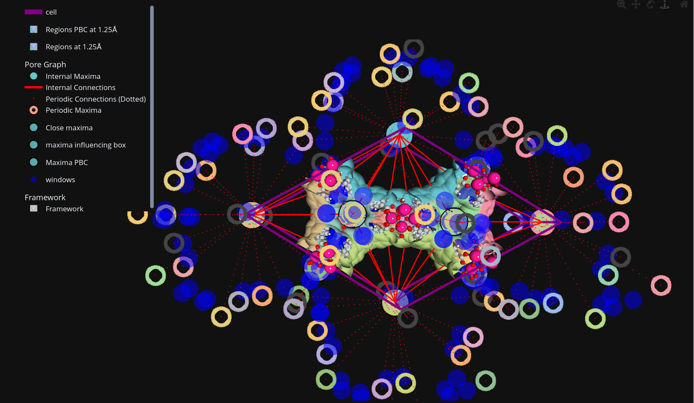
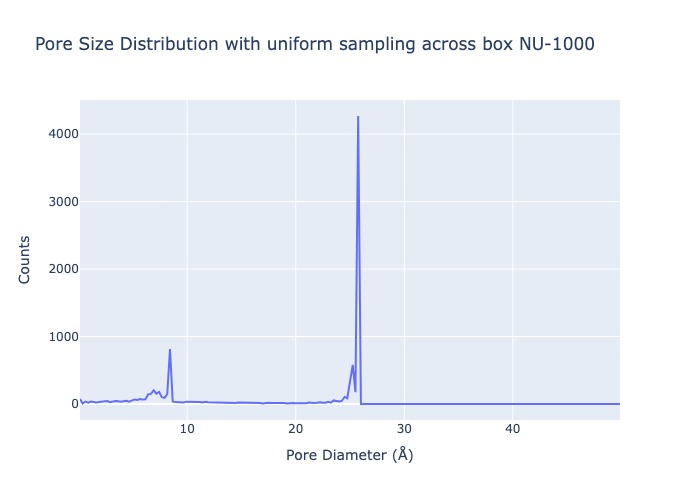
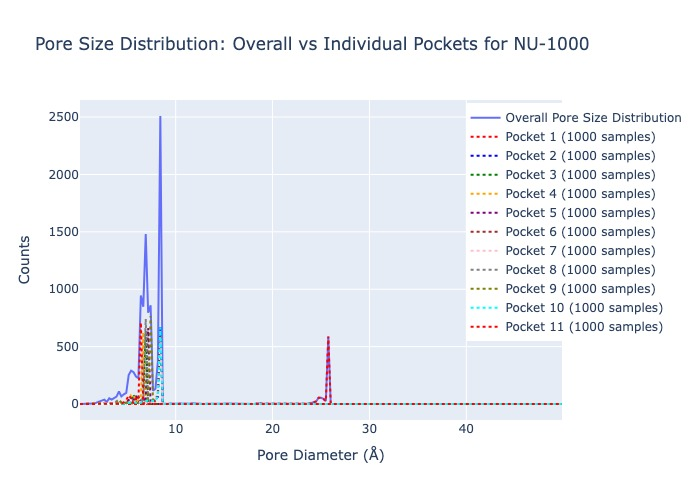

🚀 MOFography Rust Backend Documentation
███╗░░░███╗░██████╗░██████╗░░░░░░░██████╗░██╗░░░██╗░██████╗████████╗
████╗░████║██╔════╝░██╔══██╗░░░░░░██╔══██╗██║░░░██║██╔════╝╚══██╔══╝
██╔████╔██║██║░░██╗░██████╔╝█████╗██████╔╝██║░░░██║╚█████╗░░░░██║░░░
██║╚██╔╝██║██║░░╚██╗██╔══██╗╚════╝██╔══██╗██║░░░██║░╚═══██╗░░░██║░░░
██║░╚═╝░██║╚██████╔╝██║░░██║░░░░░░██║░░██║╚██████╔╝██████╔╝░░░██║░░░
╚═╝░░░░░╚═╝░╚═════╝░╚═╝░░╚═╝░░░░░░╚═╝░░╚═╝░╚═════╝░╚═════╝░░░░╚═╝░░░Overview
MOFography includes a high-performance Rust backend that provides optimized implementations for computationally intensive tasks in porous material analysis. The Rust functions are exposed to Python through PyO3 bindings, offering significant performance improvements over pure Python implementations while maintaining the same API.
💡 Pro Tip: If you’re analyzing large MOF structures or need faster computations, the Rust backend can provide 5-20x speed improvements!
Installation and Setup
Installing Rust (Cargo) 🛠️
The Rust backend requires Rust and Cargo to be installed on your system. Follow the platform-specific instructions below:
Windows
Download the Rust installer from https://rustup.rs/
Run the installer and follow the on-screen instructions
Open a new Command Prompt or PowerShell window
Verify installation:
rustc --version cargo --version
macOS
Install Homebrew if not already installed:
/bin/bash -c "$(curl -fsSL https://raw.githubusercontent.com/Homebrew/install/HEAD/install.sh)"Install Rust:
curl --proto '=https' --tlsv1.2 -sSf https://sh.rustup.rs | shFollow the on-screen instructions
Verify installation:
rustc --version cargo --version
Linux (Ubuntu/Debian)
curl --proto '=https' --tlsv1.2 -sSf https://sh.rustup.rs | sh
source $HOME/.cargo/env
rustc --version
cargo --versionLinux (CentOS/RHEL/Fedora)
curl --proto '=https' --tlsv1.2 -sSf https://sh.rustup.rs | sh
source $HOME/.cargo/env
rustc --version
cargo --versionInstalling Maturin
Maturin is a tool for building and publishing Rust-based Python packages. Install it using pip:
pip install maturinCompiling the Rust Backend
Navigate to the mofography directory containing the Rust code:
cd /path/to/mofography/mgr_rustBuild the Python wheel using maturin in release mode for optimal performance:
maturin build --releaseThe compiled wheel will be available in
target/wheels/
Installing the Python Module
Install the compiled wheel:
pip install --force-reinstall target/wheels/*.whlVerify the installation by importing the module:
import mgr_rust dir(mgr_rust) #* you should see a long list of functions (not all are used currently.) print("Rust backend successfully installed!")Reinstall/Install mofography
If you already have mofography python module installed, uninstall it,
pip uninstall mofographythen reinstall it from the cloned repo to get the new Rust wrapping functions, they all end with “_rust”, you can find easily using autocomplete.
python setup.py installKey Rust Functions ⚡
Distance Grid Generation (dgrid_from_atoms) 📏
Python Wrapper: dgrid_from_atoms_rust(ase_atoms, spacing, radii=None)
Purpose: Computes the distance grid from atomic positions using van der Waals radii.
Benefits: - Performance: ~10-15x faster than Python implementations - Memory Efficient: Optimized memory usage for large grids - Parallel Processing: Utilizes multiple CPU cores automatically
Van der Waals Energy Grid Generation (egrid_from_atoms) 🔋
Python Wrapper: egrid_from_atoms_rust(ase_atoms, spacing, forcefield_mixed=None, cutoff=12.5, probe_symbol='He')
Purpose: Computes Van der Waals (VdW) energy grids using Lennard-Jones parameters.
Benefits: - High Performance: Significantly faster computation of VdW interactions - Accurate Cutoff Handling: Efficient neighbor list construction with cutoff - Scalable: Handles large systems with many atoms efficiently
Periodic Segmentation Workflow (do_periodic_segmentation_rust) 🔄
Python Wrapper: do_periodic_segmentation_rust(dgrid, mat_atoms, **kwargs)
Purpose: Performs complete periodic watershed segmentation of porous materials with periodic boundary conditions.
Key Rust Functions Used:
detect_maxima_selective_smoothing_parallel
- Purpose: Advanced h-maxima detection with selective smoothing
- Benefits:
- Parallel processing for faster maxima detection
- Selective smoothing preserves important features while reducing noise
- Handles periodic boundary conditions correctly
move_maxima_to_peaks
- Purpose: Refines maxima positions using gradient ascent
- Benefits:
- Sub-pixel accuracy for maxima locations
- Fast convergence using optimized algorithms
- Memory-efficient implementation
seeded_watershed_bucket
- Purpose: High-performance watershed segmentation
- Benefits:
- Bucket-based algorithm for better memory locality
- Multi-threaded processing
- Handles large 3D grids efficiently
window_connections
- Purpose: Computes connections between pore regions
- Benefits:
- Fast window-based connection detection
- Accurate periodic boundary handling
- Optimized for large datasets
Overall Workflow Benefits: - Speed: 5-20x faster than pure Python implementations - Memory: Reduced memory footprint for large systems - Accuracy: Better handling of periodic boundary conditions - Scalability: Efficient processing of large MOF structures
Pore Size Analysis Functions 📊
The pore size distribution (PSD) calculations use the Gelb and Gubbins method for accurate pore size determination.
compute_pore_sizes_uniform 🎯
Python Wrapper: compute_pore_sizes_uniform_rust(dgrid, ase_atoms, num_samples_total=10000)
Purpose: Computes pore size distributions using uniform sampling across the entire unit cell.
Benefits: - Fast Sampling: Rapid generation of sampling points - Parallel Computation: Multi-threaded pore size calculations - Memory Efficient: Optimized data structures
compute_pore_sizes_for_psd_pocketwise 🎯
Python Wrapper: compute_pore_sizes_pocketwise_rust(dgrid, regions_pbc, ase_atoms, samples_per_region=1000)
Purpose: Computes pore sizes for individual pockets/regions using region-specific sampling.
Benefits: - Region-Specific Analysis: Detailed analysis per pore region - High Performance: Fast computation for multiple regions - Accurate Results: Precise pore size calculations
Important Note: When computing pocket-wise PSD, the overall distribution shown is a collective of
num_samples_per_regionacross all unique labels inregions_pbc. This will be different from PSD computed using uniform sampling across the box, as the points are sampled differently (region-weighted vs. uniform spatial sampling).
Example Usage
Basic Periodic Segmentation with Rust Backend
import mofography as mgr
from ase.io import read
import numpy as np
import plotly.graph_objects as go
import logging
logging.basicConfig(level=logging.INFO) # this will print out progress statements
# Load structure
path_to_cif = '../examples/TestCIFs/NU-1000_S1.cif'
mat_atoms = read(path_to_cif)
# Set parameters
spacing = 0.5 # Angstroms
extra_padding = 5 # Angstroms
# Generate distance grid using Rust backend
dgrid = mgr.dgrid_from_atoms_rust(mat_atoms, spacing=spacing)
# Perform periodic segmentation using Rust workflow
results = mgr.do_periodic_segmentation_rust(
dgrid=dgrid,
mat_atoms=mat_atoms,
spacing=spacing,
extra_padding=extra_padding,
return_padded_regions=True,
return_dgrid=True
)
# Extract results
regions = results['regions']
maxima_pbc = results['maxima_pbc']
connections = results['connections']
all_maxima = results['all_maxima']
dgrid = results['dgrid']
print(f"Segmentation completed in {results.get('computation_time', 'N/A')} seconds")
print(f"Found {len(maxima_pbc)} periodic maxima groups")
print(f"Identified {len(np.unique(regions))} regions")Visualization Example
# Update structure with bonds for visualization
mat_updated = mgr.update_with_covalent_bonds(mat_atoms)
# Set visualization parameters
surface_value = 1.25
cscale = px.colors.qualitative.Pastel
# Create visualization traces
cell_trace = mgr.plot_cell(mat_atoms)
frame_trace = mgr.plot_framework_as_mesh(mat_updated, stylize=True)
# Plot different types of maxima
close_maxima_trace = mgr.plot_maxima(
dgrid,
results['close_or_inside_maxima'],
mat_atoms,
name='Close maxima',
show_spheres=False,
marker_colorscale=cscale
)
maxima_trace = mgr.plot_maxima(
dgrid,
all_maxima[:regions.max()],
mat_atoms,
name='Maxima influencing box',
show_spheres=False,
marker_colorscale=cscale
)
maxima_trace_pbc = mgr.plot_maxima(
dgrid,
maxima_pbc,
mat_atoms,
name='Maxima PBC',
show_spheres=False,
marker_colorscale=cscale
)
# Plot surfaces for different region types
surface_trace_pbc = mgr.plot_surface_dgrid(
dgrid,
isovalue=surface_value,
region_labels=regions_pbc,
ase_atoms=mat_atoms,
cscale=cscale,
name=f'Regions PBC at {surface_value} Å',
stylize=True
)
surface_trace = mgr.plot_surface_dgrid(
dgrid,
isovalue=surface_value,
region_labels=regions,
ase_atoms=mat_atoms,
cscale=cscale,
name=f'Regions at {surface_value} Å',
stylize=True
)
# Plot connections and windows
connections_trimmed = [c for c in connections if np.any(np.isin(c[0], results['unique_regions']))]
connections_trace = mgr.plot_connections_as_it_is(
connections_trimmed,
all_maxima,
regions.shape,
mat_atoms,
cscale=cscale,
plot_disconnected=False
)
windows_trace = mgr.plot_windows(connections_trimmed, marker_color='blue')
# Create and display figure with all traces
fig = go.Figure(
data=[
cell_trace, # Unit cell boundaries
surface_trace_pbc, # PBC-aware regions surface
surface_trace, # Standard regions surface
*connections_trace, # Connections between regions
close_maxima_trace, # Maxima close to unit cell
maxima_trace, # All maxima influencing the box
maxima_trace_pbc, # Periodic boundary condition maxima
windows_trace, # Window connections
*frame_trace, # Framework atoms/bonds
],
layout=mgr.dark_layout
)
# Configure layout for optimal viewing
fig.update_layout(scene_aspectmode="data")
fig.update_layout(legend_groupclick="toggleitem")
# Display the figure
fig.show(renderer="browser")
Example output: periodic seg. traces for NU-1000 using Rust backendPore Size Distribution Analysis
# Load structure and compute distance grid
from ase.io import read
import mofography as mgr
import numpy as np
mat_atoms = read('../examples/TestCIFs/NU-1000_S1.cif')
dgrid = mgr.dgrid_from_atoms_rust(mat_atoms, spacing=0.25)
# Compute overall PSD with uniform sampling across the unit cell
psd, fig_psd = mgr.compute_psd_uniform_rust(
dgrid,
mat_atoms,
num_samples_total=10000,
bins=np.linspace(0, 50, 200),
density=False,
material='NU-1000',
return_fig=True
)
# Display the figure
fig_psd.show(renderer='chrome')
Example output: Uniform pore size distribution for NU-1000# Bonus: Get raw sample points and pore sizes for custom analysis
sample_points, pore_sizes = mgr.compute_pore_sizes_uniform_rust(
dgrid,
mat_atoms,
num_samples_total=10000
)
# Perform periodic segmentation for pocket-wise analysis
results = mgr.do_periodic_segmentation_rust(
dgrid=dgrid,
mat_atoms=mat_atoms,
return_dgrid=True,
spacing=0.25,
extra_padding=0.0,
return_padded_regions=False
)
# Compute pocket-wise PSDs
regions_pbc = results['regions_pbc']
pocket_psds, fig_pocket_psds = mgr.compute_psds_pocketwise_rust(
dgrid,
regions_pbc,
mat_atoms,
num_samples_per_region=1000,
bins=np.linspace(0, 50, 200),
material='NU-1000',
return_fig=True
)
# Display pocket-wise PSDs
fig_pocket_psds.show()
Example output: Pocket-wise pore size distributions for NU-1000# Bonus: Get raw data for custom pocket-wise analysis
sample_points, pore_sizes, sample_point_labels = mgr.compute_pore_sizes_pocketwise_rust(
dgrid,
regions_pbc,
mat_atoms,
num_samples_per_region=1000
)Note: For more comprehensive example of pore size distribution calculations, see the Pore size distributions tutorial.
Performance Benefits 📈
Speed Improvements ⚡
- Distance Grid Generation: 10-15x faster than Python implementations
- Periodic Segmentation: 5-20x faster, especially for large systems
- Pore Size Calculations: 8-12x faster with parallel processing
- Memory Usage: 30-50% reduction in memory footprint
Scalability 🌍
- Large Systems: Efficiently handles MOFs with thousands of atoms
- High Resolution: Scales well with finer grid spacings
- Multi-threading: Automatic utilization of multiple CPU cores
Accuracy and Reliability ✅
- Periodic Boundaries: Correct handling of PBC in all calculations
- Numerical Stability: Optimized algorithms for better convergence
- Memory Safety: Rust’s memory safety prevents crashes and bugs
Troubleshooting 🔧
Common Issues
Import Error:
ModuleNotFoundError: No module named 'mgr_rust'- Ensure maturin is installed:
pip install maturin - Build the wheel:
maturin build --release - Install the wheel:
pip install --force-reinstall target/wheels/*.whl
- Ensure maturin is installed:
Compilation Errors: Check Rust version and dependencies
rustc --version # Should be >= 1.70 cargo --version # Should be >= 1.70 maturin --version # Should be installedPerformance Issues: Ensure release build is used
maturin build --release # Not just maturin build
Performance Optimization Tips 💡
- Use appropriate grid spacing (0.3-0.5 Å recommended)
- Adjust
extra_paddingbased on system size, you can safely use 0.0. This extra_padding is over and above standard padding + a safety cushion of 5 A. - Use
return_padded_regions=Falseandcompute_connections=Falseif they are not needed - Consider system resources when setting
num_samples_total
Future Developments 🚀
- A cli tool for quick use without Jupyter
- Standalone mgr executable without needing a Python env.
- Rust backend to convert results to Networkx compatible graph object for downstream ML
For more detailed information about the periodic segmentation algorithm and its outputs, see: - Periodic Segmentation Notes - Outputs from Periodic Segmentation
Implementation Details: For additional helper functions, parameter details, and implementation specifics, refer to the source code in
mofography/rust_fun.py. Warning: The unused functions inmgr_rust/src/lib.rsare wildly experimental, I wouldn’t trust the ones that are not used somewhere inrust_fun.py.